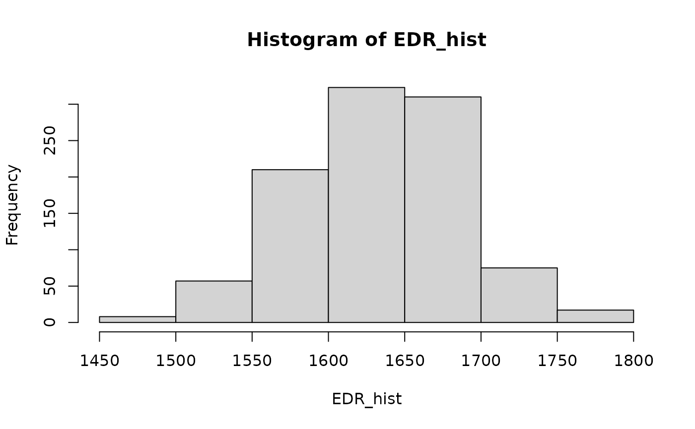
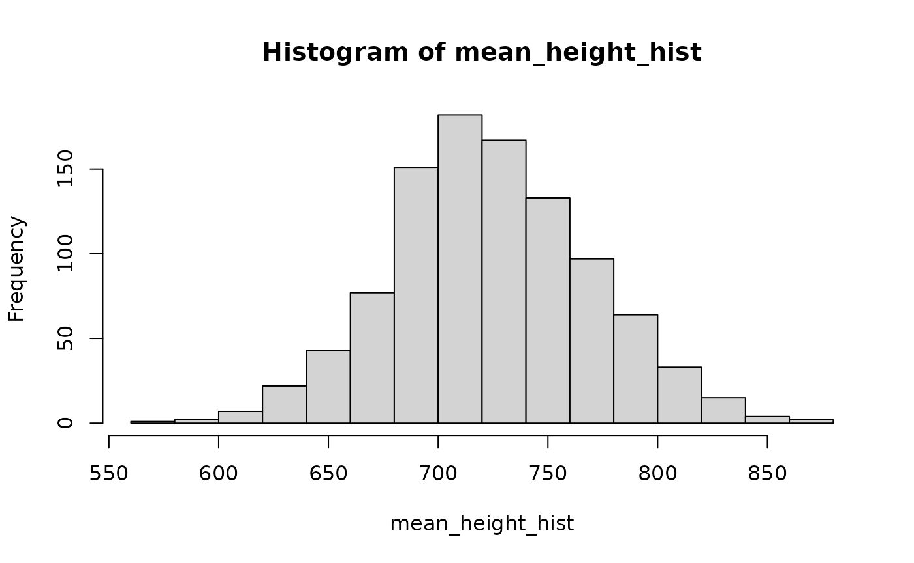
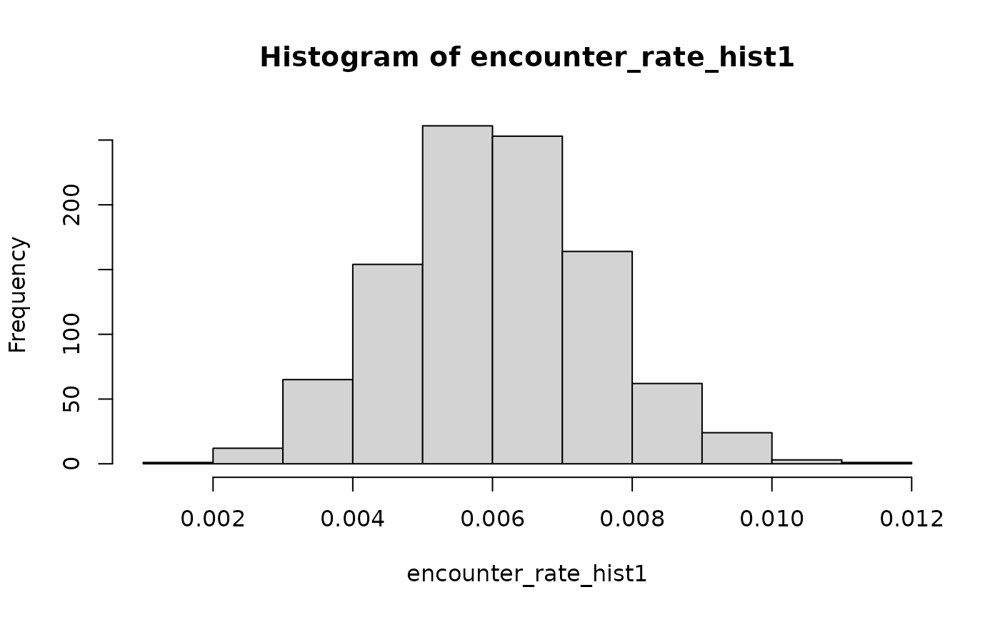
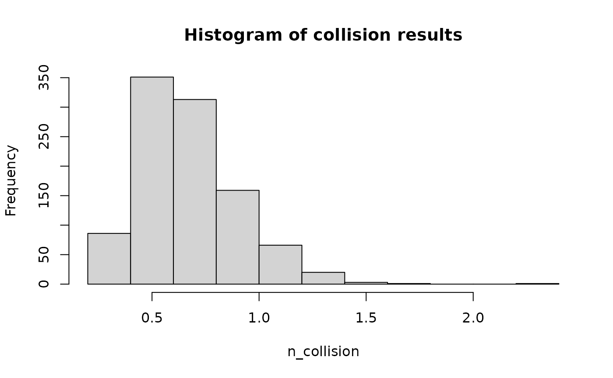

Simple simulation example
Source:vignettes/simple-simulation-example.Rmd
simple-simulation-example.Rmd
library(collision)
library(Distance) # for distance modelling
#> Loading required package: mrds
#> This is mrds 3.0.1
#> Built: R 4.5.0; ; 2025-07-06 04:17:12 UTC; unix
#>
#> Attaching package: 'Distance'
#> The following object is masked from 'package:mrds':
#>
#> create.bins
library(mc2d) # for the PERT distribution
#> Loading required package: mvtnorm
#>
#> Attaching package: 'mc2d'
#> The following objects are masked from 'package:base':
#>
#> pmax, pmin
library(ggplot2)
library(data.table) # for easy summarising and joinsStochastic Example
This is a good example to start with stochastic simulation. It models a (fictional) site with four proposed turbines, of two different models, and a (fictional) point count survey of a raptor species.
For this example we assume flight density is constant across the site.
We are going to calculate a simple stochastic model output here.
In the examples below we are just outlining how to use the model but there’s a lot of analysis required beforehand to fit a distance curve and extract the effective detection radius, analyse flight heights, and understand the spatial and temporal variability in the flight patterns. Please refer to other vignettes for more information.
The inner functions of the package are designed to take single value
inputs. The input functions define_bird and
define_turbine can define single or stochastic inputs. So
we need to:
- Define stochastic rules for inputs
- bird(s):
define_bird() - turbine(s):
define_turbine() - proportion of flights at and below rotor swept height
- effective detection radius (EDR): obtained from distance modelling (Buckland et al. 2001)
- encounter rate:
encounter_rate() - mean flight height
- bird(s):
- Sample from the input distributions into the collision calculations to determine the distribution of possible collision outcomes.
This allows the simulation to more accurately reflect the uncertainty due to both natural variance (e.g. bird wingspan) and measurement uncertainty (e.g. estimated flight heights).
Define inputs
Turbine model
Step one is to set up a turbine - here’s some examples of two generic
turbines, set up using the define_turbine function. These
parameters can be defined as probability distributions or as single
numbers.
turbine_model1 <- define_turbine(
model_id = "Turbine 180",
blade_length = 88,
blade_thickness_narrow = 0.5,
blade_thickness_wide = 3,
d_base = 8.7,
d_rotormin = 6.57,
d_top = 3.5,
hh = 149,
max_chord = 5,
min_chord = 2,
max_nac_h = 3,
max_nac_l = 20,
max_width_nacelle = 3,
rpm = set_random("rnorm", mean = 6.5, sd = 2),
rotor_diam = 180,
tilt_deg = 6,
prop_operational = 0.98
)
turbine_model2 <- define_turbine(
model_id = "Turbine 150",
blade_length = 73.7,
blade_thickness_narrow = 0.4,
blade_thickness_wide = 3,
d_base = 7,
d_rotormin = 5.6,
d_top = 3,
hh = 112,
max_chord = 4.2,
min_chord = 1.5,
max_nac_h = 3,
max_nac_l = 13,
max_width_nacelle = 3,
rpm = set_random("rnorm", mean = 9.1, sd = 2),
rotor_diam = 150,
tilt_deg = 6,
prop_operational = 0.98
)Bird species
We make a ‘bird’ object - a list of key parameters. These parameters can be defined as probability distributions or as single numbers.
wte <- define_bird(
species = "Wedge-tailed Eagle",
bird_length = set_random("rnorm", mean = 0.945, sd = 0.2) ,
bird_speed = set_random("rnorm", mean = 17, sd = 3),
prop_day = set_random("runif", min = 0.48, max = 0.52),
prop_year = 1,
avoidance_dynamic = set_random("rpert",
min = 0.88, max = 0.95,
mode = 0.92, shape = 4),
avoidance_static = 0.9999
)Note: the Beta PERT distribution (rpert) is a good
distribution to use if you only have the mode (or mean) and the minimum
and maximum parameters for a species (eg. mean body length = 0.95m,
range: 0.6-1.2m). See the Choosing Distributions1 for
information on how to fit the distributions.
Survey data
Now we need to determine the input values from the observations. In order to determine the error on the estimate of the parameter we use the bootstrap method to repeatedly resample the distribution. This is just an example of how you can obtain the distribution, it is up to the analyst to determine how best to model these parameters.
The package observations dataset:
summary(df_obs)
#> distance size type height
#> Min. : 71.0 Min. :1.0 Length:120 Min. : 43.0
#> 1st Qu.: 534.8 1st Qu.:1.0 Class :character 1st Qu.: 328.0
#> Median : 763.0 Median :1.0 Mode :character Median : 662.0
#> Mean : 805.4 Mean :1.3 Mean : 730.5
#> 3rd Qu.:1027.0 3rd Qu.:2.0 3rd Qu.: 986.2
#> Max. :1878.0 Max. :2.0 Max. :2469.0
#> survey_id object
#> Min. : 1.00 Min. : 1.00
#> 1st Qu.: 29.75 1st Qu.: 30.75
#> Median : 60.00 Median : 60.50
#> Mean : 53.91 Mean : 60.50
#> 3rd Qu.: 78.00 3rd Qu.: 90.25
#> Max. :100.00 Max. :120.00
# converting to data.table for ease of joining and summarising
dt_obs <- setDT(copy(df_obs))is a dataset of 120 observations from 100 point count surveys,
including the count (size) of raptors and associated
distance at first observation (distance).
And the package survey dataset:
summary(df_survey)
#> survey_id survey_duration survey_type
#> Min. : 1.00 Min. :45 Length:100
#> 1st Qu.: 25.75 1st Qu.:45 Class :character
#> Median : 50.50 Median :45 Mode :character
#> Mean : 50.50 Mean :45
#> 3rd Qu.: 75.25 3rd Qu.:45
#> Max. :100.00 Max. :45
dt_survey <- setDT(copy(df_survey))is a dataset of the metadata for the 100 point count surveys, including the duration of each survey.
It’s very important that the field data include any surveys with no sightings as well as positive detections.
Between the two of them these tables must include:
- Distance to the bird at first sighting in metres. If transect sampling, this is usually the perpendicular (right-angle) distance from the transect line.
- Duration of the surveys in minutes
- Count of individuals in each survey (
size)
Effective Detection Radius
For this example, we assume you have done the required distance correction and have arrived at a distance model.
summary(ds_raptor)
#>
#> Summary for distance analysis
#> Number of observations : 120
#> Distance range : 0 - 2334
#>
#> Model : Half-normal key function with cosine adjustment terms of order 2,3
#>
#> Strict monotonicity constraints were enforced.
#> AIC : 1812.536
#> Optimisation: mrds (slsqp)
#>
#> Detection function parameters
#> Scale coefficient(s):
#> estimate se
#> (Intercept) 6.822439 0.08498135
#>
#> Adjustment term coefficient(s):
#> estimate se
#> cos, order 2 -0.33444481 0.1543828
#> cos, order 3 0.09652554 0.1490168
#>
#> Estimate SE CV
#> Average p 0.6314592 0.141781 0.2245292
#> N in covered region 190.0360410 43.949117 0.2312673Rather than extracting the EDR from this model (which would give us a single value) we bootstrap the distance model and the EDR to obtain the standard deviation on the estimate of the EDR.
## Define bootstrap-able function
edr_fun <- function(dt_survey = dt_survey,
i = nrow(dt_survey),
dt_obs = dt_obs){
dt_boot_i <- dt_survey[i][order(survey_id)]
dt_obs_i <- dt_obs[dt_boot_i[, .(survey_id)]
, on = .(survey_id)
, nomatch = 0]
ds_CI <- tryCatch(
ds(data = dt_obs_i[, -c("object")],
formula = ~ 1,
key = "hn",
dht_group = TRUE) # same arguments used to fit the orginal distance model (ds_raptor)
, error = function(e) {
print(e)
NULL
}
)
if (is.null(ds_CI)) return(NA)
edr_boot <- edr_from_distmodel(ds_CI)
return(edr_boot)
}
ds_boot <- boot::boot(data = dt_survey
, statistic = edr_fun,
, sim = "ordinary"
, stype = "i"
, R = 150
, dt_obs = dt_obs
)
# bootstraps need to be checked for convergence to make sure you've done enough replicates
# which is not done in this example
## Define EDR
edr <- set_random("rnorm", # normally distributed per CLT
mean = ds_boot$t0,
sd = sd(ds_boot$t, na.rm = TRUE)
)
## visual check of distribution
EDR_hist <- sapply(1:1000, FUN = function(i) collision::sample_input(edr) )
hist(EDR_hist)
Flight heights
In order to determine the flight flux we need to integrate the distribution of the heights. This is because unlike with the EDR we can’t fit a distance model to the heights because distance modelling relies on the assumption that the birds are uniformly distributed which we know is not the case in vertical space.
We can use the mean height to model the height distribution as a uniform density with the same mean.
sample_mean <- function(dt_survey = dt_survey,
i = seq_len(nrow(dt_survey)),
dt_obs = dt_obs){
dt_boot_i <- dt_survey[i][order(survey_id)]
dt_obs_i <- dt_obs[dt_boot_i[, .(survey_id)]
, on = .(survey_id)
, nomatch = 0]
return(weighted.mean(dt_obs_i$height, dt_obs_i$size))
}
h_boot <- boot::boot(data = dt_survey
, statistic = sample_mean,
, sim = "ordinary"
, stype = "i"
, R = 150
, dt_obs = dt_obs
)
## Define mean height
mean_h <- set_random("rnorm",
mean = h_boot$t0,
sd = sd(h_boot$t, na.rm = TRUE)
)
## take a look
mean_height_hist <- sapply(1:1000, FUN = function(i) collision::sample_input(mean_h) )
hist(mean_height_hist)
We also need the proportion of flights at and below rotor swept height to account for the amount of flights at risk of being struck by the blades of the turbine.
min_rsh1 <- turbine_model1$hh - turbine_model1$rotor_diam * 0.5
max_rsh1 <- turbine_model1$hh + turbine_model1$rotor_diam * 0.5
min_rsh2 <- turbine_model2$hh - turbine_model2$rotor_diam * 0.5
max_rsh2 <- turbine_model2$hh + turbine_model2$rotor_diam * 0.5
## calculate ecdf
# Note - this is a simple example; it's up to the analyst how best to fit the height distribution
prop_below <- function(dt_survey = dt_survey,
i = seq_len(nrow(dt_survey)),
dt_obs = dt_obs,
h = max_rsh){
dt_boot_i <- dt_survey[, .(survey_id = unique(survey_id))][i]
dt_obs_i <- dt_obs[dt_boot_i, on = .(survey_id), nomatch = 0]
cdf_dat <- ecdf(dt_obs_i$height)
return(cdf_dat(h))
}
# turbine model 1
## bootstrap prop below min RSH
hmin_boot1 <- boot::boot(
data = dt_survey,
statistic = prop_below, stype = "i",
R = 900,
h = min_rsh1,
dt_obs = dt_obs
)
prop_below_height1 <- set_random("rnorm", mean = hmin_boot1$t0, sd = sd(hmin_boot1$t))
# you may need to use a bounded distribution if the proportion is near 0 or 1
## bootstrap prop below max RSH
hmax_boot1 <- boot::boot(
data = dt_survey,
statistic = prop_below, stype = "i",
R = 900,
h = max_rsh1,
dt_obs = dt_obs
)
prop_below_max1 <- set_random("rnorm", mean = hmax_boot1$t0, sd = sd(hmax_boot1$t))
# defining prop_at_height as prop_below_max-prop_below_height ensures
# that prop_at_height + prop_below_height will never be greater than 1
# turbine model 2
## bootstrap prop below min RSH
hmin_boot2 <- boot::boot(
data = dt_survey,
statistic = prop_below, stype = "i",
R = 900,
h = min_rsh2,
dt_obs = dt_obs
)
prop_below_height2 <- set_random("rnorm", mean = hmin_boot2$t0, sd = sd(hmin_boot2$t))
## bootstrap prop below max RSH
hmax_boot2 <- boot::boot(
data = dt_survey,
statistic = prop_below, stype = "i",
R = 900,
h = max_rsh2,
dt_obs = dt_obs
)
prop_below_max2 <- set_random("rnorm", mean = hmax_boot2$t0, sd = sd(hmax_boot2$t))Encounter Rate
This is where we determine the average encounter rate per unit time of survey. That is the average number of individuals observed in each minute of survey (or whatever unit of time you wish to use). This is basically just , however the function also allows for weighting surveys to account for stratification and can apply the Wilson correction (Wilson 1927) if there were no observations.
This function takes as input a df_obs_summary
data.frame. This object has one row per survey and must contain a column
named survey_duration and a column named size
which is the total number of individuals observed in
each survey (not observation). Optionally, it can
contain a column named survey_weight which has the
associated relative weights of each survey (to avoid artificially
inflating or deflating the encounter rate
sum(survey_weight) must equal the number of surveys).
First let’s make that table (using data.table):
dt_obs_survey <- dt_obs[, .("size" = sum(size)), survey_id][dt_survey,
on = "survey_id"]
# need sum(size) because we want one row per survey (not observation)
setnafill(dt_obs_survey, cols = c("size"), fill = 0) # set size to 0 for surveys with no observationsNow we can use this table in encounter_rate():
er_fun <- function(dat, i){
return(encounter_rate(df_obs_summary = dat[i]))
}
er_boot <- boot::boot(data = dt_obs_survey
, statistic = er_fun,
, sim = "ordinary"
, stype = "i"
, R = 200
)
## Define Encounter rate
encounter_rate <- set_random("rnorm",
mean = er_boot$t0,
sd = sd(er_boot$t, na.rm = TRUE)
)
## take a look
encounter_rate_hist <- sapply(1:1000, FUN = function(i) collision::sample_input(encounter_rate) )
hist(encounter_rate_hist)
Define a set of turbines
The basic template for the model outputs is a data.frame
of turbine inputs. These can be read in from a csv, or you can set them
up with a few basic pieces of information and the turbine definition
above.
For each turbine we need a turbine ID, and a location. Location can be NA if you are not including any spatial modelling.
df_turbines <- data.frame(
turbine_id = c("T01", "T02", "T03", "T04"),
model = rep(c("Turbine 180", "Turbine 150"), each = 2),
lat = c(-32.512, -32.521, -32.523, -32.516),
lon = c(143.441, 143.442, 143.444, 143.447)
)Run the simulation
Here we set up a loop to run the simulation. Note that each iteration of the loop is independent to others, meaning that you can wrap the loop inside methods to run the iterations in parallel to save time if you wish.
- Step 0 - Set up simulation parameters
- Step 1 - Sample inputs for bird, turbine, prop at height, prop below height, mean height, effective detection radius (EDR) and encounter rate.
- Step 2 - Calculate
turbine_flights_year()with sampled values - calculate flights through turbine per year - Step 3 - Run
prob_collision_static()andprob_collision_dynamic()- calculate for one interaction - Step 4 - Run
n_collisions()- calculate number of collisions a year
For a breakdown of each step see the deterministic examples.
## inputs needed:
## seed for reproducibility
## iterations - how many runs
## df_turbines - class `data.frame`
## wte - class `birdInput`
## v90_single - class `turbineInput`
## prop_at_height - class `randomInput`
## prop_below_height - class `randomInput`
## edr - class `randomInput`
## encounter rate - class `randomInput`
## mean height - class `randomInput`
set.seed(1234)
iterations <- 1000
lst_results <- lapply(1:iterations, function(i) {
df_turbines_results <- df_turbines
# Step 1 - Sample inputs for bird, turbine, prop at height and prop below height
bird_i <- sample_input(wte)
edr_i <- sample_input(edr)
er_i <- sample_input(encounter_rate)
mean_h_i <- sample_input(mean_h)
turbines1_i <- sample_input(turbine_model1)
prop_below_height1_i <- sample_input(prop_below_height1)
prop_below_max1_i <- sample_input(prop_below_max1)
prop_at_height1_i <- prop_below_max1_i-prop_below_height1_i
turbines2_i <- sample_input(turbine_model2)
prop_below_height2_i <- sample_input(prop_below_height2)
prop_below_max2_i <- sample_input(prop_below_max2)
prop_at_height2_i <- prop_below_max2_i-prop_below_height2_i
# Step 2 calculate flux through turbine per year
df_turbines_results[df_turbines_results$model == "Turbine 180",
"flight_turbine_year"] <- turbine_flights_year(
survey_type = c("point"),
encounter_rate = er_i,
eff_detection_width = 2*edr_i,
mean_flight_height = mean_h_i,
rotor_diameter = turbines1_i$rotor_diam,
hub_height = turbines1_i$hh,
prop_day = bird_i$prop_day,
prop_year = bird_i$prop_year
)
df_turbines_results[df_turbines_results$model == "Turbine 150",
"flight_turbine_year"] <- turbine_flights_year(
survey_type = c("point"),
encounter_rate = er_i,
eff_detection_width = 2*edr_i,
mean_flight_height = mean_h_i,
rotor_diameter = turbines2_i$rotor_diam,
hub_height = turbines2_i$hh,
prop_day = bird_i$prop_day,
prop_year = bird_i$prop_year
)
# Step 3 - Run `p_collisions()` - calculate $P(C|I)$ for one interaction
df_turbines_results[df_turbines_results$model == "Turbine 180",
"p_coll_static"] <- prob_collision_static(
d_base = turbines1_i$d_base,
d_rotormin = turbines1_i$d_rotormin,
d_top = turbines1_i$d_top,
hh = turbines1_i$hh,
blade_length = turbines1_i$blade_length,
max_nac_h = turbines1_i$max_nac_h,
max_nac_l = turbines1_i$max_nac_l,
max_width_nacelle = turbines1_i$max_width_nacelle,
rotor_diam = turbines1_i$rotor_diam,
tilt_deg = turbines1_i$tilt_deg,
max_chord = turbines1_i$max_chord,
min_chord = turbines1_i$min_chord,
blade_thickness_wide = turbines1_i$blade_thickness_wide,
blade_thickness_narrow = turbines1_i$blade_thickness_narrow,
prop_at_height = prop_at_height1_i,
prop_below_height = prop_below_height1_i
)
df_turbines_results[df_turbines_results$model == "Turbine 150",
"p_coll_static"] <- prob_collision_static(
d_base = turbines2_i$d_base,
d_rotormin = turbines2_i$d_rotormin,
d_top = turbines2_i$d_top,
hh = turbines2_i$hh,
blade_length = turbines2_i$blade_length,
max_nac_h = turbines2_i$max_nac_h,
max_nac_l = turbines2_i$max_nac_l,
max_width_nacelle = turbines2_i$max_width_nacelle,
rotor_diam = turbines2_i$rotor_diam,
tilt_deg = turbines2_i$tilt_deg,
max_chord = turbines2_i$max_chord,
min_chord = turbines2_i$min_chord,
blade_thickness_wide = turbines2_i$blade_thickness_wide,
blade_thickness_narrow = turbines2_i$blade_thickness_narrow,
prop_at_height = prop_at_height2_i,
prop_below_height = prop_below_height2_i
)
df_turbines_results[df_turbines_results$model == "Turbine 180",
"p_coll_dyn"] <- prob_collision_dynamic(
rpm = turbines1_i$rpm, # s_rot,
blade_length = turbines1_i$blade_length,
max_width_nacelle = turbines1_i$max_width_nacelle,
rotor_diam = turbines1_i$rotor_diam,
blade_thickness_wide = turbines1_i$blade_thickness_wide,
blade_thickness_narrow = turbines1_i$blade_thickness_narrow,
hh = turbines1_i$hh,
bird_length = bird_i$bird_length,
bird_speed = bird_i$bird_speed,
prop_at_height = prop_at_height1_i,
prop_below_height = prop_below_height1_i
)
df_turbines_results[df_turbines_results$model == "Turbine 150",
"p_coll_dyn"] <- prob_collision_dynamic(
rpm = turbines2_i$rpm, # s_rot,
blade_length = turbines2_i$blade_length,
max_width_nacelle = turbines2_i$max_width_nacelle,
rotor_diam = turbines2_i$rotor_diam,
blade_thickness_wide = turbines2_i$blade_thickness_wide,
blade_thickness_narrow = turbines2_i$blade_thickness_narrow,
hh = turbines2_i$hh,
bird_length = bird_i$bird_length,
bird_speed = bird_i$bird_speed,
prop_at_height = prop_at_height2_i,
prop_below_height = prop_below_height2_i
)
# Step 4 - Run `n_collisions()` - calculate number of collisions a year
df_turbines_results$n_collision <- n_collision(
avoidance_rate_static = bird_i$avoidance_static,
avoidance_rate_dynamic = bird_i$avoidance_dynamic,
n_flights = df_turbines_results$flight_turbine_year,
p_coll_static = df_turbines_results$p_coll_static,
p_coll_dynamic = df_turbines_results$p_coll_dyn
)
## for reporting - optional
df_turbines_results$iteration <- i
return(df_turbines_results)
})Now we have the output of each simulation. We can use them to plot out the histogram of collision results. This shows the distribution of the long-term average annual collision rate for the wind farm.
lapply(lst_results, function(x) {
sum(x$n_collision)
}) |>
unlist() |>
hist(x = _, xlab = "n_collision", main = "Histogram of collision results")